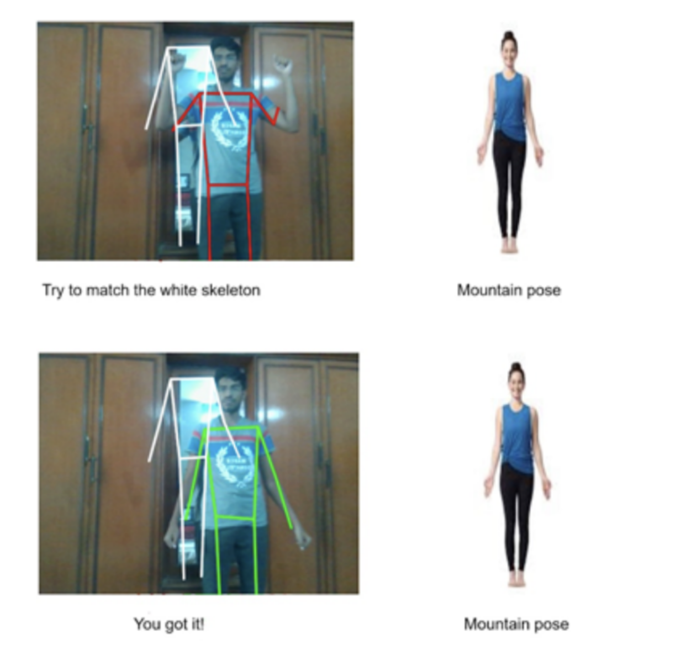
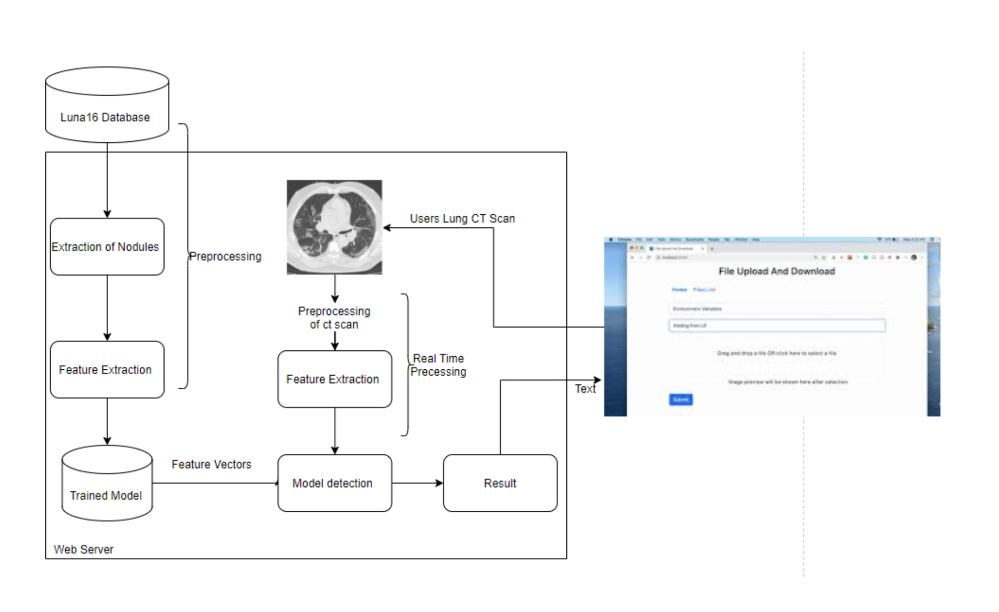

Publications
BeFit—A Real-Time Workout Analyzer
Springer Singapore, ICSADL 2021
Abstract
Maintaining one's physical fitness is of utmost importance. Exercising regularly is very important as it helps improve the quality of life. However, incorrect posture during exercises may lead to severe long-term injuries such as back pain, Tendinitis or even hamstring strains. Hence, this application BeFit is proposed that analyzes the posture of the user performing a particular workout by comparing their workout to the reference image or video provided by the system. The system will analyze the angles between the limbs of the body and compare it to the reference video or image using the Cosine rule. After synchronizing user and reference image or video the system gives a green skeleton if the user posture is correct and a red skeleton if the user posture is incorrect. This model has been achieved using the PoseNet library on Tensorflow. The maximum score that the PoseNet model achieves ranges from 0.92874 to 0.98325 for all the key points. With the help of this model, fitness enthusiasts can perform a particular workout accurately at the comfort of their home without getting injured and with proper guidance. 
Detection of Lung Carcinoma using Volumetric Convolution (V-Net)
IEEE, INCET 2022
Abstract
Lung cancer is one of the leading causes of cancer-related deaths due to its aggressive nature and late detection at advanced stages. Timely detection of lung cancer is critical for a patient’s life and is a significant challenge. In general, chest radiography (X-rays) and Computed Tomography (CT) scans are utilized to diagnose malignant nodules; however, the presence of benign nodules leads to inaccurate choices. In the early stages, benign and malignant nodules seem strikingly similar. This research presents an innovative deep learning-based model with multiple approaches for the accurate diagnosis of malignant nodules. We discussed the Volumetric Convolution (V-Net) architecture for lung nodule detection and classification using the Lung Nodule Analysis (LUNA-16) dataset in this study. 